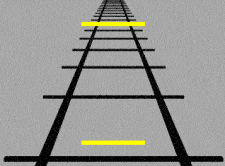

Online dating used to be reserved for single parents and the washed up spinsters who had an easy way to lock down a beta provider as they would be the only men on there, but today things have changed and basically anyone who owns a smartphone is in the game.
Apps such as Tinder provide an easier outlet to engage in online dating for the younger generation, with an abundance of talent under the age of 35. With easy access to a variety of girls all with the swipe of a thumb, it would appear as though we have hit the jackpot, but for the majority of average guys out there, the harsh reality tells a different story.

It does seem like we have an easy and convenient option of meeting new girls, compared to the standard nightclub grind. Now you don’t have to wait till the weekend in hopes that your friends might be keen on a night on the town to hit on women when it’s more than likely you will be ending the night getting smashed and stuffing your face with a kebab while waiting for an Uber big enough to fit your blue balls in.
The new age of online dating has basically eliminated the need to rely on such endeavors as you can now hit on an unlimited amount of girls from your smartphone. However, we are paying the ultimate price for this convenience as it allows the majority of females the opportunity to fulfill their sexual desires at the detriment of the average bloke.
The rise of social media and online dating apps such as Tinder give females a platform for endless attention and validation. These reasons alone provide girls with leverage over most males in the sexual marketplace. Back in the day, girls would have to dress to the nines and smash a few bottles of cheap wine with their girlfriends while pre-drinking to pop music ready to get even less attention than they do now.
In a nightclub, girls may get hit on a few times by the more alpha or drunk guys, and maybe receive a few glances from some other guys, but not everyone in the spot will act on their urges. Tinder and social media provide all girls with an endless source of validation, because any guy can show their interest much easier than real life. The validation may come in the form of a like on social media or a right swipe on Tinder, which over time will cause an inflated ego and sense of self worth.
Most of my successes have been in real life situations based and my willingness to approach and the way I presented myself. If I’m in a nightclub and I’m one of the few guys to approach and make a good impression, there is more urgency for the girl to act on my advancements, since there is a chance she might not see me again. On Tinder, however, there is no urgency for a girl to see a guy who she finds attractive compared to a real life situation.
In the digital world, I am just one of many hundred other guys who could have approached her in a given week. It’s hard to set yourself apart and gain the same attention compared to real life when any guy can easily approach online.
The ease of entry for any guy to get in the online game causes an increase in competition for the same girls. For instance, a Tinder profile can be set up quite easily—all you need is a few photos and your mum to take some cool muscle pictures of you while your flexing into the camera.
It’s quite easy to become complacent and rely solely on online game as you can technically approach girls until you get thumb cramp, but with every other guy adopting the same strategy, girls will soon become saturated with unlimited options. This is because most guys are keen to pursue these girls.
Girls who receive attention from a large pool of guys have a false sense of their own value. And if provided with a large selection of potential candidates, girls will only chose the top value men, who may not want a relationship with these girls, but are still willing to sleep with them one or two times.
Things that earn the average guy points in real life like having the balls to cold approached in public along with the confidence and charisma that follows have a limited value in the online world. So while you’re killing your pool workout at the gym and right swiping in-between sets, it will be that tall good-looking meathead with the shit tattoos that will be best served on Tinder.
Many of the average males are left with limited options, as girls who are less attractive than they are manage to secure intimacy with higher value males. Girls who have the option to sleep with higher value males will be reluctant to settle for guys of the same or lower level of attractiveness.
The result is a high number of guys who are not getting any action but are still helping validate these girls online. Due to the large amount of thirsty guys, girls are now in a position of power as they can control the sexual marketplace.
In a time where such harsh conditions are dictating the sexual marketplace, it is more important now to consider other alternatives, as only relying on Tinder will be a poor strategy. As previously highlighted in the manosphere, both day and night game can yield good results, especially if you commute into the city everyday on public transport. It also helps if you live in a city where you have strong social connections.
It is important for guys to realize the current state of dating in the modern digital society in order to be aware of the disadvantages they face, so appropriate steps can be taken in spite of the adversity.
Read More: 6 Reasons Why Online Dating Can Never Be As Good As Real Life